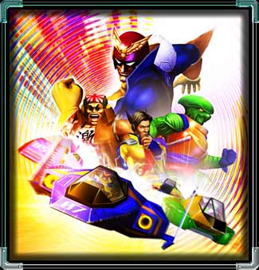

|
 待望のF-ZEROシリーズ最新作『F-ZERO GX』がゲームキューブに登場! 前作『F-ZERO X』（N64）をはるかに凌駕するスリルとスピード感！美麗なグラフィックで描かれたサーキットを疾走する爽快感と研ぎ澄まされたテクニックで1000分の１秒を削る緊張感が魅力の世界最速レースゲームです。
気になるゲームモードも充実。サーキットを転戦しながら、レースの順位に応じて与えられる入着ポイントの合計を競う「グランプリモード」、ライバルのいないコースを３周して合計タイム、ベストラップ、最高速度の更新をめざす「タイムアタックモード」、ふたりから最大４人までが同時プレイ可能な「VSバトルモード」に加えて、シリーズ初の「ストーリーモード」や「カスタマイズモード」が搭載された。「カスタマイズモード」で好きなようにマシンを改造し、「VSバトルモード」で友達と対戦させるなんて遊び方もできる！
任天堂×セガという夢のコラボレーションにより生まれた今作は、シリーズの特徴を引き継ぎながらも大幅にスケールアップ。従来のレースゲームの枠を超えた、たくさんの魅力が味わえる作品に仕上がっているのです。そして何と言っても注目はアーケード版『F-ZERO AX』との連動！『GX』と『AX』という２つの舞台を行き来することで、遊びの幅は広がりつつも深くなっていく・・・『GX』で自分のカスタムマシンを完成させたら、メモリーカードに入れてライバルが待つ『AX』に持って行こう！
|
|
|